Cell death and disease
Apoptosis is not the only way a cell can kill itself. Cells also have programmes that make them swell and burst. These deaths are messy on purpose: they alarm the immune system.
After this lecture you can:
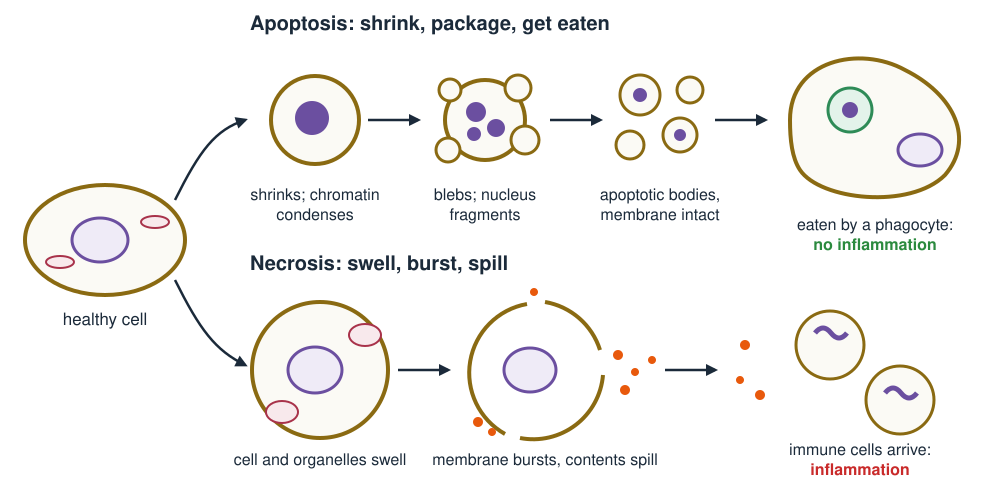
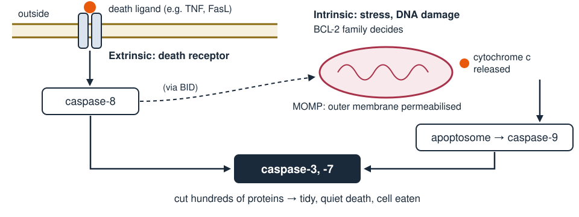
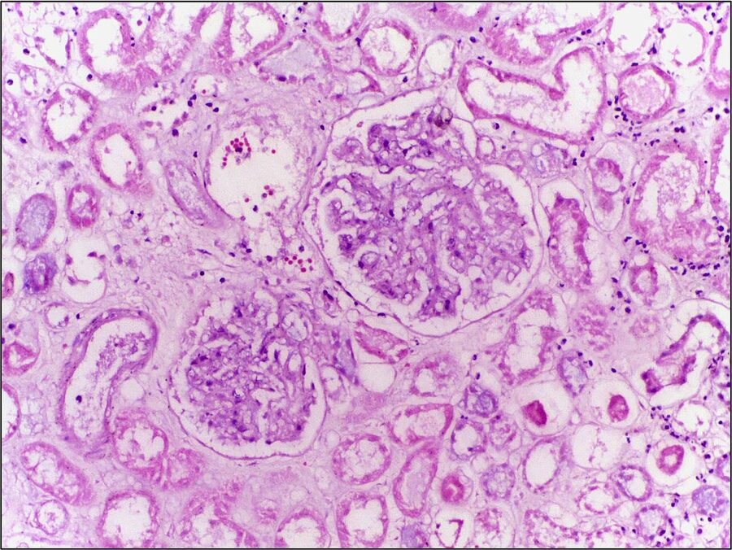
Kidney infarct (H&E). The tubules and glomeruli keep their outlines, but most nuclei are gone: the cells died by necrosis when the blood supply stopped.
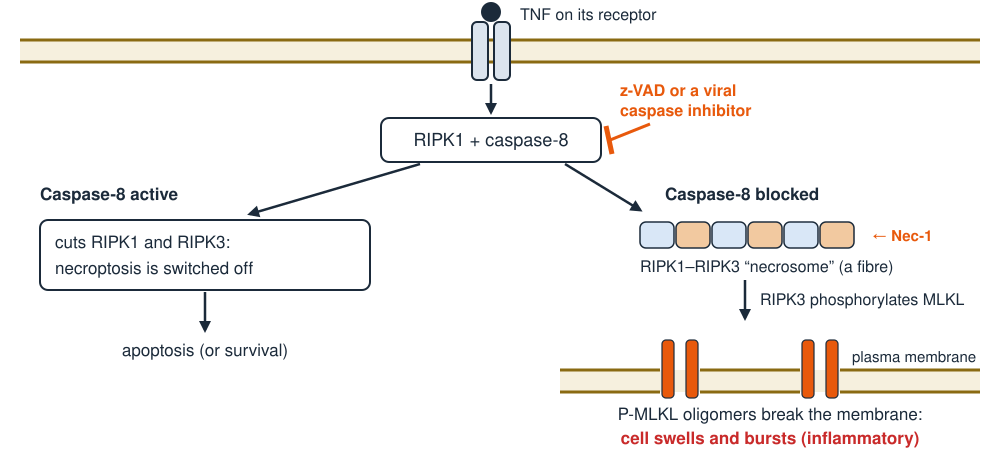
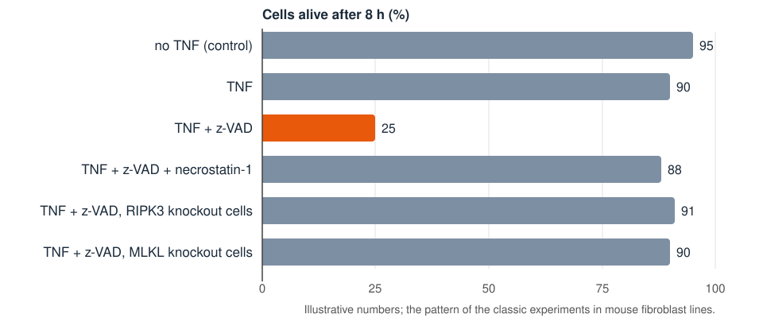
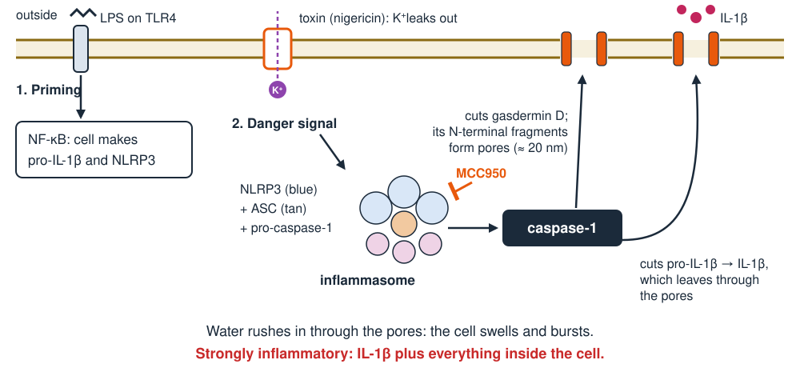
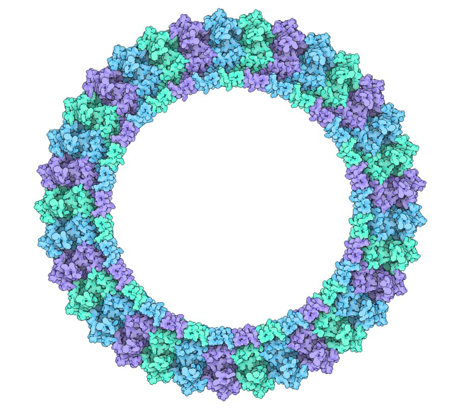
Gasdermin D pore seen from above (cryo-EM, PDB 6VFE): about 33 subunits in a ring, inner diameter about 20 nm.
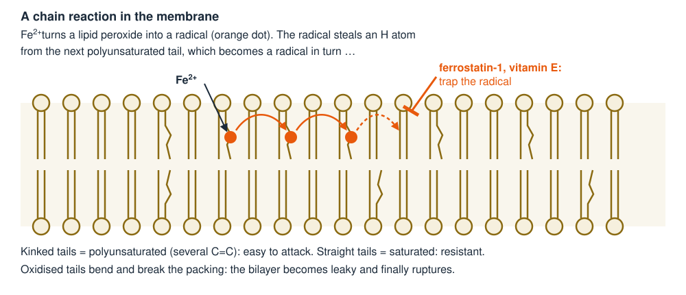
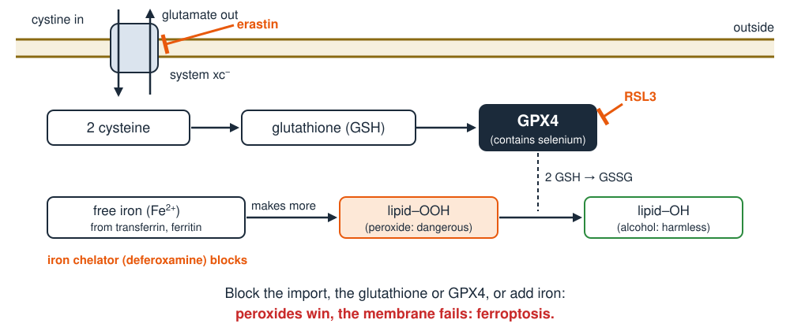
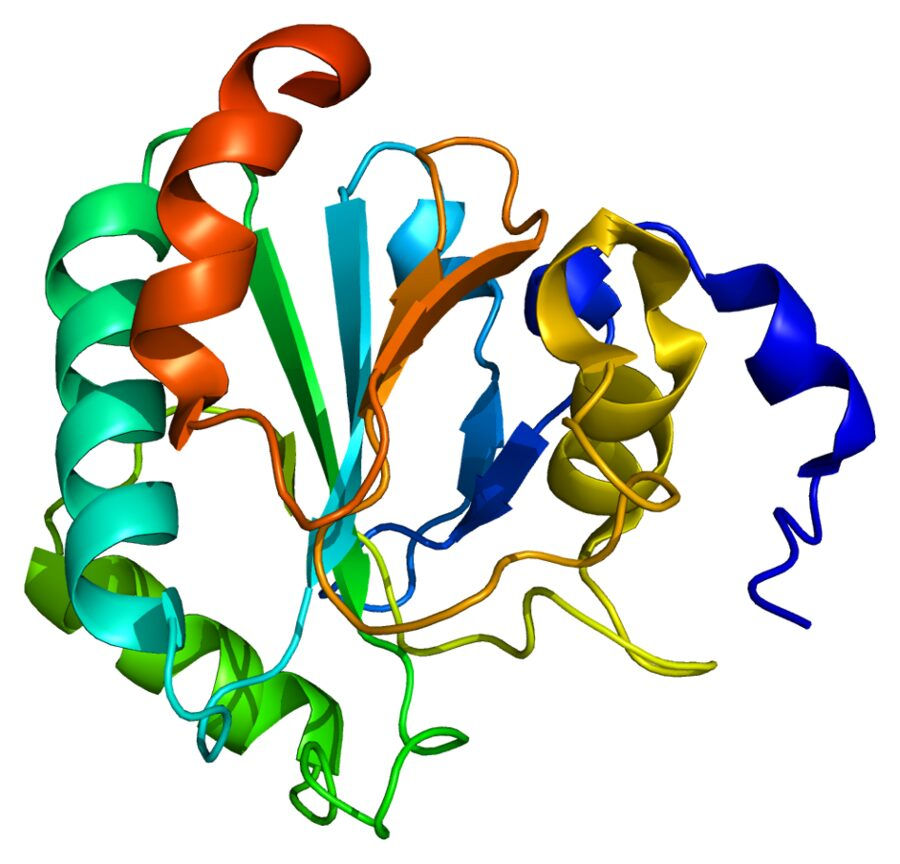
GPX4 (PDB 2GS3), a small selenium enzyme.
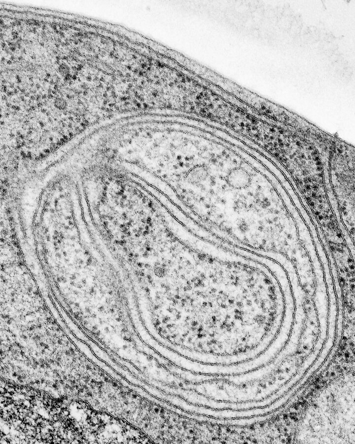
Autophagosome (EM): a double membrane wrapping a piece of ER.
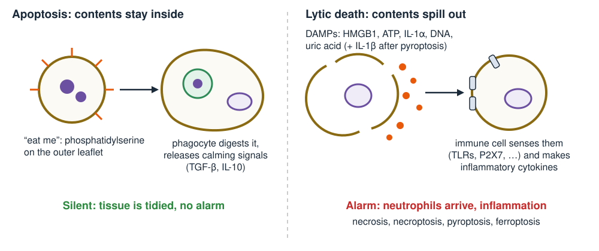
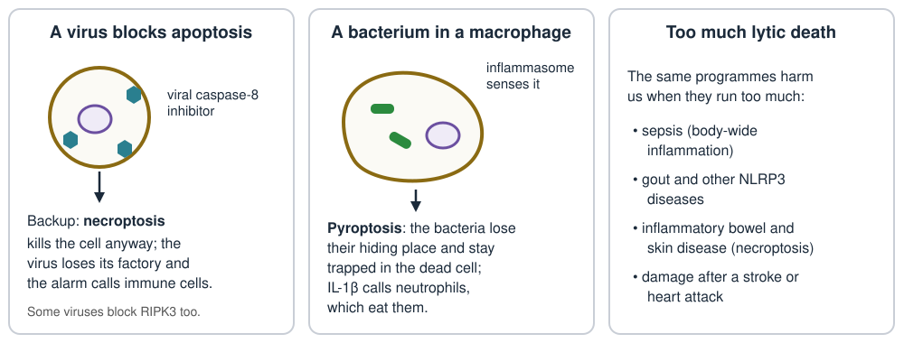
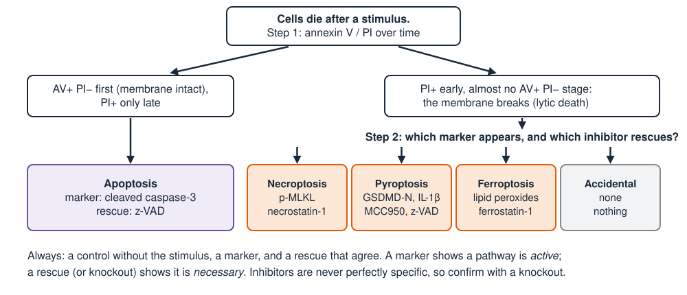
| Apoptosis | Necroptosis | Pyroptosis | Ferroptosis | Accidental necrosis | |
|---|---|---|---|---|---|
| Typical trigger | DNA damage, stress; death receptors | TNF (or virus) when caspase-8 is blocked | Microbes, toxins, crystals, in immune cells | Loss of GPX4 or cystine; excess iron | Heat, freezing, detergent, crush, no ATP |
| Morphology | Shrinks, blebs, nucleus fragments, apoptotic bodies | Swells, membrane ruptures | Swells with “balloons”, bursts | Rounds up, ruptures; small dense mitochondria | Swells, bursts |
| Key molecules | BCL-2 family, caspase-8/-9 → caspase-3/-7 | RIPK1, RIPK3, MLKL | Inflammasome (NLRP3, ASC), caspase-1, gasdermin D | Iron, polyunsaturated lipids, GPX4, glutathione | None (no programme) |
| Plasma membrane | Intact until eaten | Broken by MLKL | Pores of gasdermin D, then rupture | Broken by lipid peroxidation | Broken directly |
| Inflammation | No (calming) | Yes (DAMPs) | Strong (IL-1β, DAMPs) | Yes (DAMPs) | Yes (DAMPs) |
| Marker | Annexin V⁺ PI⁻; cleaved caspase-3 | Phospho-MLKL | Cleaved gasdermin D; IL-1β release | Lipid peroxides (C11-BODIPY) | Early PI⁺, no specific marker |
| Inhibitor (tool) | z-VAD (all caspases) | Necrostatin-1 (RIPK1) | MCC950 (NLRP3); caspase-1 inhibitors | Ferrostatin-1; iron chelators | None |
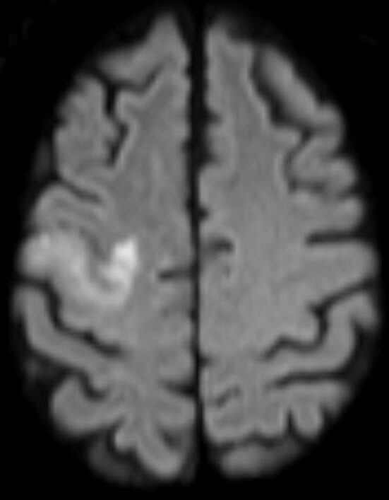
Stroke, MRI (diffusion): the bright area is dying brain tissue.
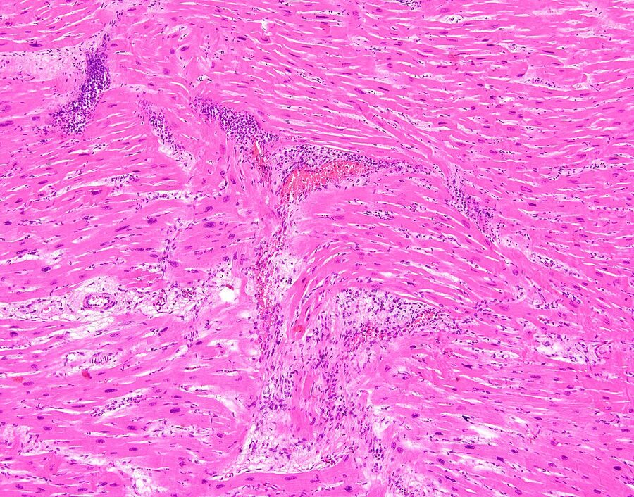
Heart infarct (H&E): dead muscle with an influx of neutrophils (dark dots).
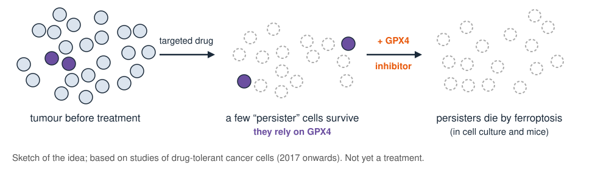
Read more (optional): Alberts et al., Molecular Biology of the Cell, 7th ed., ch. 18.